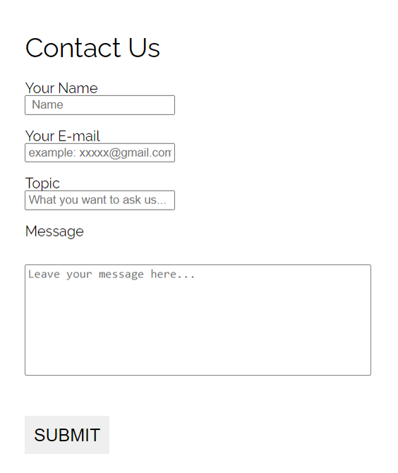

My Apartment
Web design & development
Type
SI539 class work
My role
Web designer & developer
Deliverables
Mobile-first design, Additional Javascript application
Duration
3 months
Structure of pages
I chose the apartment I used to live in, Island Drive Apartment in Ann Arbor, to design the official website for.
The structure of the pages is simple: The index page gives an overview of the apartment and its advantages in order to attract future residents. And the navigation bar links to three other subpages: the room plan and prices page, the service page, and the application page.

Mobile-first & Responsible Design
Mobile-first design means that styles are applied first to mobile devices and I used min-width media queries.The overall page layout uses CSS gird. For the basic mobile view, I only use 1 column to stack contents.
The tablet breakpoint is 768px because it's the popular screen size of tablets (1024 x 768). The overall layout like the CSS grid of the whole page(header, main, aside, footer) is not changed. But I add more smaller grids in each section. For example, in one section, unlike text and images stacked top and bottom in mobile views, text and images can be arranged horizontally in a grid. Accordingly margin and padding are increased. And in the gallery, justify-content is space around.
The desktop breakpoint is 992px because it's the popular screen size of large devices like desktops.The overall CSS grid is changed. I gave an additional column to the aside section because the screen becomes much wider.

CSS:
body {
background-color: white;
font-family: 'Raleway', sans-serif;
margin: 0;
padding: 0;
display: grid;
grid-template-columns: 1fr;
grid-template-areas:
"header"
"main"
"aside"
"footer";
}
......
/* for tablet */
@media all and (min-width: 768px){
......
}
/* for desktop */
@media all and (min-width: 992px){
body {
grid-template-columns: 4fr 1fr;
grid-template-areas:
"header header"
"main aside"
"footer footer";
}
......
}
Gallery
I also create a reponsible gallery page with CSS flexbox.
For mobile view, I use flex-direction as column and then change it into row-wrap in tablet and desktop view.I also use the justify-item to adjust the position of pictures.
For styling, I add some new CSS effects to :hover, such as when the mouse hovers over images, to add more fun to the experience on a desktop.
More Accessibility
n order to enhance accessibility, it’s important to offer styling for objects which ****receive keyboard focus**** and a skip-to-content link for people using keyboard, screen readers, switch controls and other assistive technologies.
The skip link is the first interactive element on a page but it’s usually hidden until the user press TAB, for example, on the keyboard. Then the link will appear in the upper left corner and allow users to reach the main content or other important sections easier and faster.

CSS:
.skip{
z-index: 100;
}
.skip a{
background: white;
padding: 6px;
-webkit-transition: top 1s ease-out;
transition: top 1s ease-out;
position: relative;
left:-500px;
top:-40px;
}
.skip a:focus{
background: white;
top: 0;
left: 0;
padding: 6px;
-webkit-transition: top 1s ease-out;
transition: top 1s ease-out;
z-index: 1;
position: absolute;
}
.skip a:focus, .skip a:active{
top: 20px;
left: 0;
}
:focus{
border: 2px solid black;
}
Javascript Application——A Rent Calculator
When I look at apartment information, I am often confused about the total cost I am paying because there are so many other requirements and fees besides the rent.
So I planted a calculator written in javascript on the floorplan page, hoping to help potential tenants calculate the cost to highlight the price advantage of the apartment. Users can use the form to select different options for room type, parking, and pets to calculate their possible monthly expenses in this apartment.
Here's the screenshot:
JavaScript:
var slider = document.getElementById("wifi");
document.getElementById("start").setAttribute("onclick", "calculateRent()");
function calculateRent(){
var room = document.getElementById("room").value *1;
.......
var car;
if(document.getElementById("yes").checked="true"){
car=50;
}else{
car=0;
}
var result= room + car*1 + cat + dog + wifi;
document.getElementById("result").innerHTML="$" + result;
}
Contact-me Form
A contact form is an integral part of the apartment website as well. I used a HTML form to collect the data with the assistance of formspree.
Github link: https://github.com/SylviaZhang16/web-design